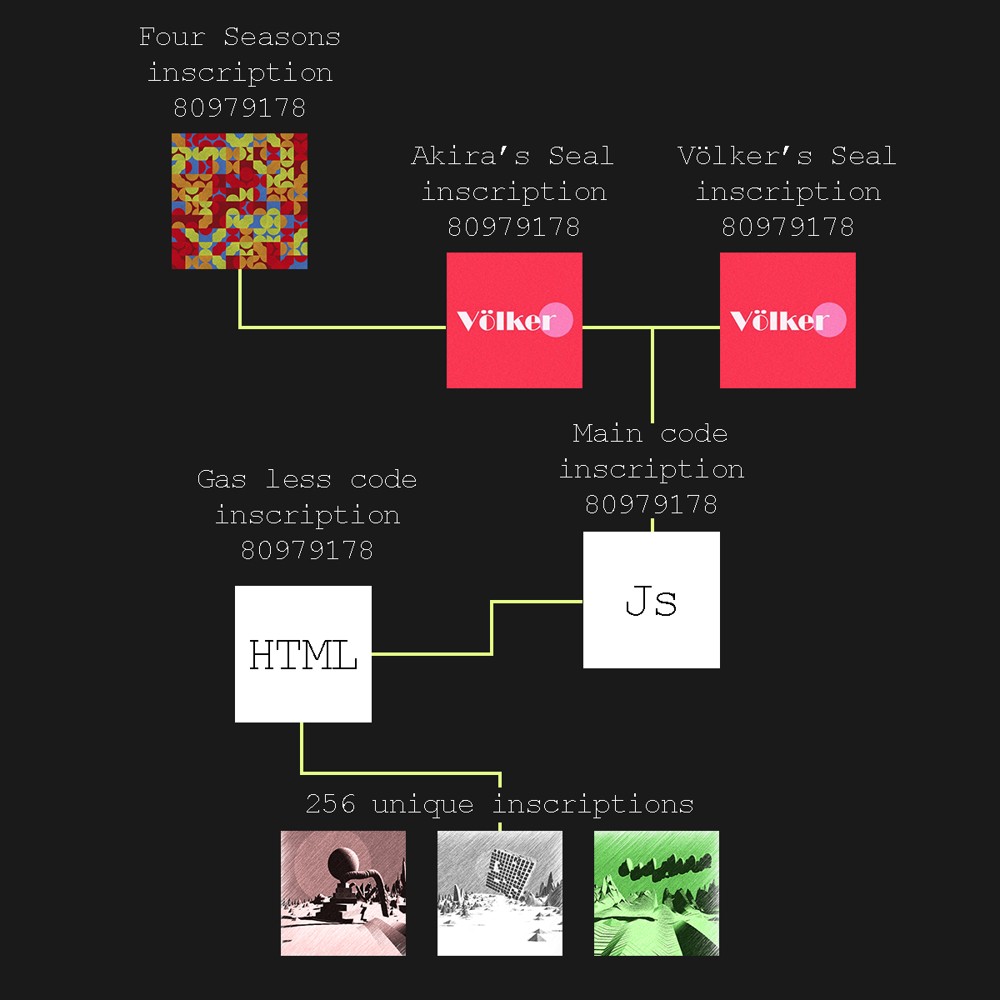
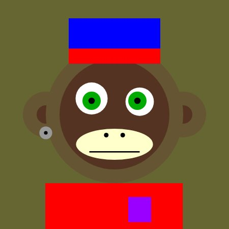

WE NEED VOLUNTEERS
CONNECT YOUR MIND
// CHAPTER I: THE SNAPSHOTS //
Thanks only to human creativity and resourcefulness
(totally not
Alien
technology)
A groundbreaking algorithm, capable of uncovering alien structures far across the Universe, was created by a team of Top-Tier scientists.
Through the power of the Human mind and the blockchain, the user can simply interact with the
to take their own snapshot of outer Space.
-- The procedure is now 100% painless --
Are you an explorer of the unknown? You too can JOIN NOW
Do you feel Anger? Do you feel Joy? Emotions might influence the output! (not guaranteed)
But these satoshis will:
Black = All black
Vintage = Monochrome
Palindrome = Double moon/sun/planet (structures may obscure it, use at your own risk)
// CHAPTER II: THE PIONEERS //
We have discovered 15 type of subjects grouped in 4 main factions (type P being the oldest and more advanced), but we know there are up to 20.
Be sure to contact our organization with relevant information so we can update our Data.
↓ THE 5 UNKNOWNS HAVE BEEN DISCOVERED ↓
5 brave pioneers ventured into the unknown and discovered the missing data.
They uncovered Alien lifeforms never seen before.
Each discovery has been immortalized as an Ordinal Inscription — forever etched on the Bitcoin blockchain.
These pioneers will be remembered for eternity.
↓ Here are the Pioneers that discovered them ↓
// CHAPTER III: THE 3D VIEWER //
After months of decoding alien transmissions, our scientists achieved the impossible.
A revolutionary 3D visualization system was developed — allowing humans to examine the discovered structures in unprecedented detail.
Rotate. Zoom. Explore. The Alien architecture reveals itself in three dimensions.
Each inscription can now be experienced like never before.
// CHAPTER IV: THE ANOMALY //
⚠ CRITICAL SYSTEM ALERT ⚠
A catastrophic bug was detected in the Alien portion of the Technosignatures code.
The anomaly triggered a cascade failure — data centers across the globe were destroyed.
HALF OF THE SUPPLY HAS BEEN PERMANENTLY BURNED.
The remaining snapshots are now rarer than ever.
But there is still time. Some inscriptions remain available to mint.
ACT NOW BEFORE THEY'RE GONE FOREVER.
// PROVENANCE //
Provenance matters, that's why we used Parent-child effectively while making sure to reduce gas cost. The main project is also inscribed on a Block9x450 Sat, as a way to represent the start of a journey, exploring and discovering the unknown and traveling together into Time, the Universe, and its wonders.


Akira Ishi
Code,
Concept,
Video,
Website
Völker
Code creator,
Initiator,
More Code